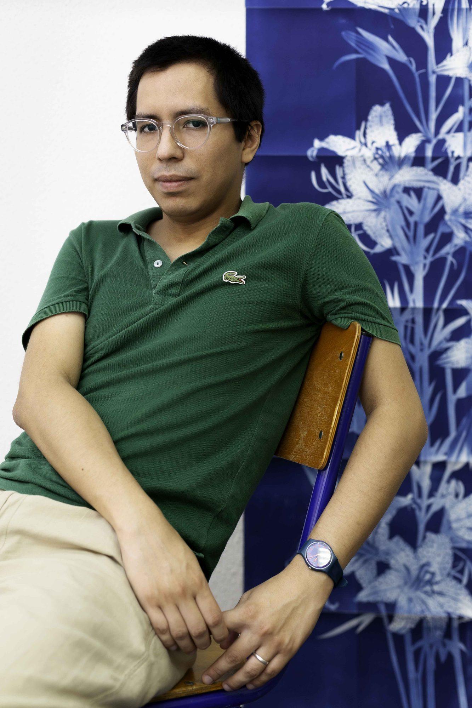

César Augusto Ramírez
All under heaven, 2026
Cyanotypes on 300g watercolor paper292 × 194 cm


César Augusto Ramírez is a Peruvian artist based in France since 2022. His work sits at the intersection of the physical and the digital, where he interrogates the political tensions between images and the technologies that generate them. Through photography, installation, video, sculpture, and even fanzines, Ramírez questions the image itself as a narrative tool, its potential and limits as a visual medium, as well as its capacity to represent and reshape reality.
His early childhood in the Peruvian jungle greatly influenced his current practice around constructed nature and visual imaginaries.
Ramírez was recently selected to join the 2027 class of Villa Albertine in the United States. As part of this program, he will undertake an artist residency in New York in April and May 2027

© Clémence Purkat, 2026